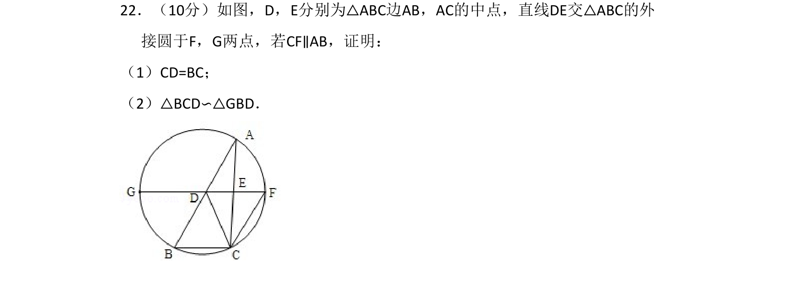
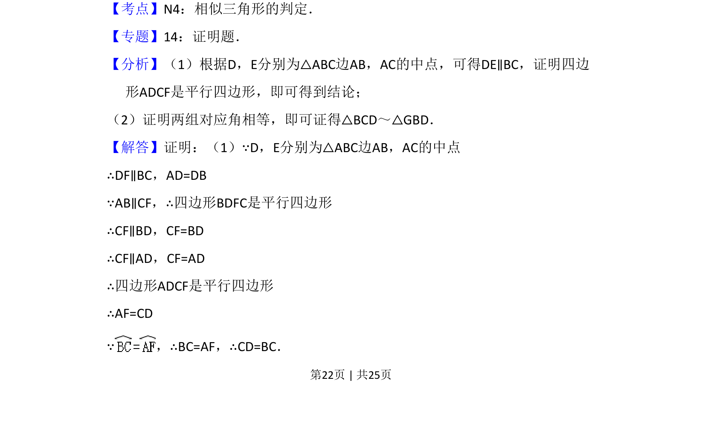
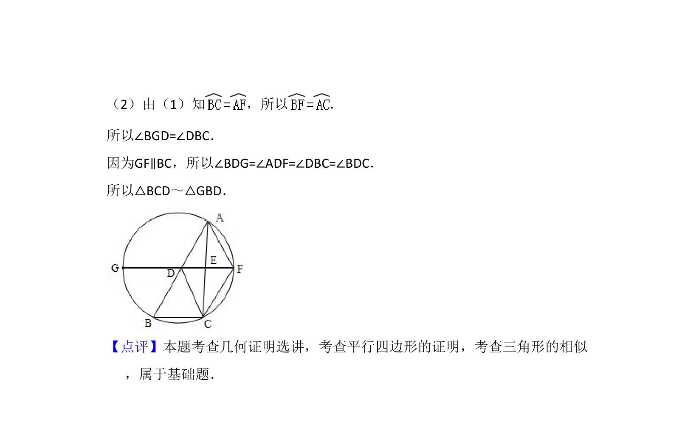

考点：相似三角形的判定 三角形中位线定理 平行四边形的判定与性质

利用三角形中位线和平行四边形证明线段相等，进而证明三角形相似。


📄 原 PDF 第 22 页：
素材/真题/吉林/2008-2024·（吉林）数学高考真题/2012年高考数学试卷（理）（新课标）（解析卷）.pdf
22．（10分）如图，D，E分别为△ABC边AB，AC的中点，直线DE交△ABC的外 接圆于F，G两点，若CF∥AB，证明： （1）CD=BC； （2）△BCD∽△GBD．
【考点】N4：相似三角形的判定．菁优网版权所有 【专题】14：证明题． 【分析】（1）根据D，E分别为△ABC边AB，AC的中点，可得DE∥BC，证明四边 形ADCF是平行四边形，即可得到结论； （2）证明两组对应角相等，即可证得△BCD～△GBD． 【解答】证明：（1）∵D，E分别为△ABC边AB，AC的中点 ∴DF∥BC，AD=DB ∵AB∥CF，∴四边形BDFC是平行四边形 ∴CF∥BD，CF=BD ∴CF∥AD，CF=AD ∴四边形ADCF是平行四边形 ∴AF=CD ∵，∴BC=AF，∴CD=BC．